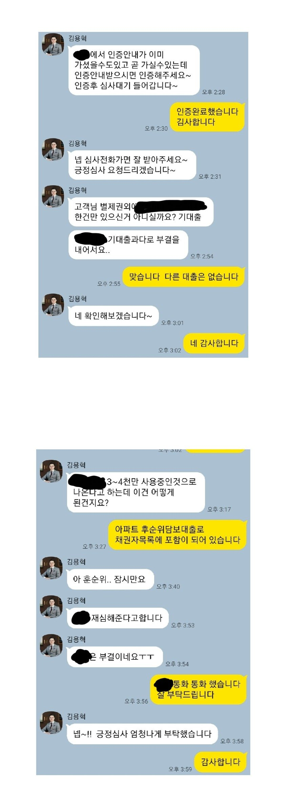
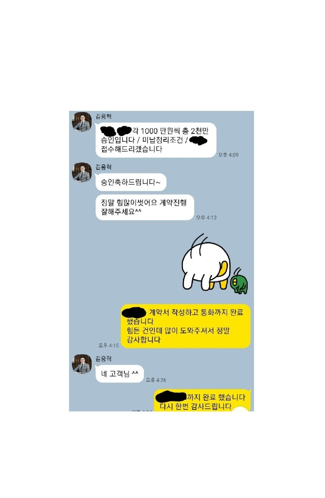
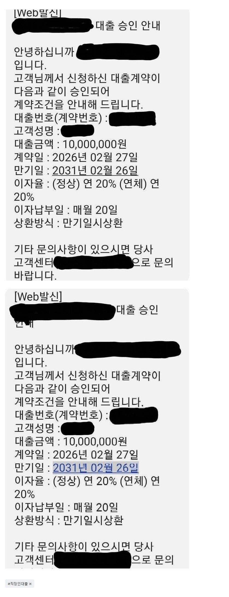

[개인회생자대출 ] 회생미납금 3.7회, 담보대출 별제권 3건, 인가후 대출 1건 보유 상태로 어려운 상황에서 2천만승인 / 김용혁대표님 감사드립니다
재직형태: 직장인
재직기간: 10년
사대보험 가입 유무: 유
소 득: 연 5천5백만원
채무내역: 별제권 및 170만원
회생미납금 3.7회로 폐지될지도 모른다는 불안감에 혹시나 하는 마음에 뱅크앤론에 문의드렸습니다
아파트 별제권 3건, 인가후 대출 1건 보유 상태라서 대출이 쉽지 않은 상황이었습니다
김용혁대표님께서 금융사 두군데 중개해주셨고 한군데에서는 신용조회 결과 부결되었으며, 다른 한군데 또한 대출상담 결과 부결된 상황이었습니다. 하지만 대표님께서 재차 힘써주신 결과 신용조회 끝에 천만원 대출 승인되었습니다. 또한 연계 대출로 천만원 추가 대출까지 승인 되었습니다
회생미납금 전부 정리하였고 여유 자금까지 마련 할 수 있게 도와주신 김용혁대표님께 다시 한번 감사드립니다



https://cafe.naver.com/cityman88/310301